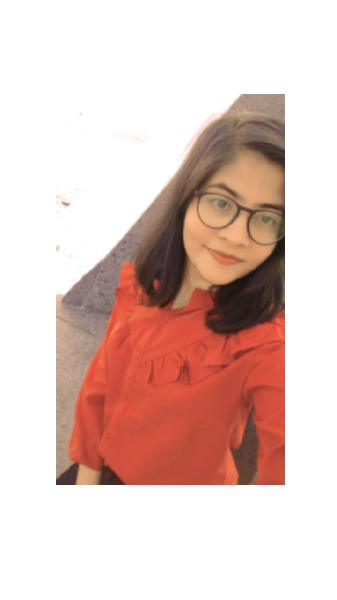

✆ +91 79781 31633 ||✉ mishralicky31@gmail.com || Gothapatana, Malipada, Bhubaneswar, Odisha 751003|| linkedin.com/in/licky-mishra-1854b1262

Bachelor of Technology in Computer Engineering.
IIIT Bhubaneshwar.
✎2022-2026|| Gothapatna, Bhubaneshwar.
Intermediate
Kendriya Vidyalaya No.1 Cuttack
✎2019-2022
CLASS REPRESENTATIVE- As the class representative of my branch, I have consistently demonstrated strong leadership qualities and exceptional speaking skills. I have effectively organized and led meetings, ensuring that everyone’s voice is heard and fostering a collaborative atmosphere. My ability to articulate ideas and concerns clearly allowed me to represent our class effectively in discussions with faculty and administration.
VOLUNTEERING- I have actively contributed to various Advaita events, one of my college fests where I showcased my exceptional management and communication skills. My role involved coordinating tasks seamlessly ensuring the smooth flow of activities and effectively communicating with team members and participants.
PARTICIPATION- I have participated in Smart India Hackathon 2023. I along with my team members made a project for detecting fishing websites. It was a great experience as I learnt a lot of things from my co mates which enhanced my ability of working in a team.
I have a great passion for singing. Have participated in many singing competitions held in school and colleges and have backed prizes. Personally I like to sing and listen slow and sufi songs. Music has brought a lot of calmness into my life and has also helped me in overcoming my stage fear.
I love to jot down my thoughts and feelings in a paper or a diary. Hence my writing skills are much enhanced by this habbit.
I also love to dance as it is a form of exercise and for me it is also a stress buster. I have performed in many college functions which helped me in enhancing my self confidence and overcoming stage fear.
Received cash prize- Been awarded a cash prize of rupees 5000 in both my 10th and 12th for being one of the top scorers in the school.
Felicited by LIC Corporation- Got ceritificate of excellence and a cash prize of rupees 1000 with a trophy for showing exellent result in 10th.